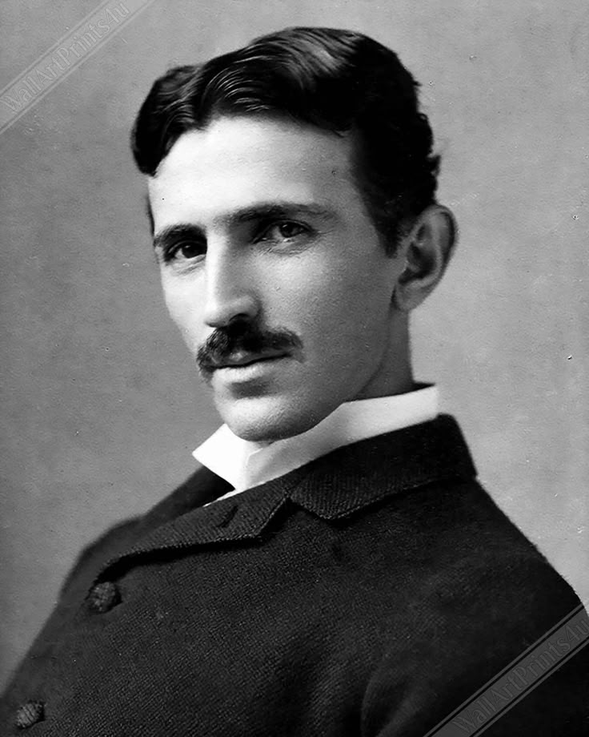

SumberNIKOLA TESLA adalah ilmuwan, insinyur listrik, dan penemu yang dikenal karena kontribusinya dalam listrik arus bolak-balik (AC), radio, dan teknologi nirkabel. Ia dianggap sebagai salah satu inovator paling berpengaruh dalam sejarah.
Nama Lengkap: Nikola Tesla Lahir: 10 Juli 1856, Smiljan, Kekaisaran Austria (sekarang Kroasia) Meninggal: 7 Januari 1943, New York, AS Bidang: Teknik listrik dan mekanik Dikenal karena: Listrik arus bolak-balik (AC) Transformator Tesla (Tesla Coil) Kontribusi pada radio dan komunikasi nirkabel Eksperimen dengan energi bebas dan listrik nirkabel
Tesla berasal dari keluarga Serbia di Kekaisaran Austria. Ia belajar di Universitas Teknik Graz dan Universitas Charles di Praha, tetapi tidak menyelesaikan studinya. Ia memiliki ingatan fotografis dan kemampuan visualisasi luar biasa, yang membantunya merancang penemuan tanpa perlu membuat sketsa terlebih dahulu.
1. Listrik Arus Bolak-Balik (AC) Tesla mengembangkan sistem listrik AC, yang lebih efisien dibanding arus searah (DC) yang didukung Thomas Edison. AC memungkinkan transmisi listrik jarak jauh dengan transformator dan generator AC. "Perang Arus" (War of Currents): Persaingan antara Tesla (AC) dan Edison (DC), yang akhirnya dimenangkan oleh AC. 2. Tesla Coil (1891) Menghasilkan tegangan tinggi dan digunakan dalam radio, radar, dan komunikasi nirkabel. 3. Radio dan Gelombang Elektromagnetik Tesla mengembangkan teknologi transmisi nirkabel sebelum Guglielmo Marconi (yang sering dianggap sebagai penemu radio). Pada 1943, Mahkamah Agung AS mengakui bahwa Tesla adalah penemu pertama radio. 4. Menara Wardenclyffe (1901–1917) Tesla berusaha membangun sistem transmisi listrik nirkabel global, tetapi proyek ini gagal karena kekurangan dana.
Tesla bekerja untuk Thomas Edison, tetapi mereka berselisih karena metode kelistrikan mereka berbeda. Ia kemudian bekerja sama dengan George Westinghouse, yang membantu menyebarkan listrik AC ke seluruh dunia. Meskipun banyak penemuannya digunakan secara luas, Tesla hidup dalam kemiskinan karena ia kurang tertarik pada bisnis. Ia meninggal sendirian di sebuah hotel di New York pada 7 Januari 1943, dalam kondisi miskin.
N ✅ Dampak Positif: Mengembangkan listrik AC, yang menjadi standar dunia saat ini. Kontribusi pada radio, radar, dan komunikasi nirkabel. Mempengaruhi perkembangan robotika, tenaga bebas, dan energi terbarukan. ❌ Dampak Negatif: Banyak proyeknya gagal karena kurangnya dana dan pengakuan. Beberapa ide seperti listrik nirkabel global dianggap terlalu ambisius. Tesla tetap dikenang sebagai salah satu jenius terbesar dalam sejarah, meskipun ia tidak mendapatkan pengakuan dan kekayaan selama hidupnya. Kini, namanya diabadikan dalam Tesla Motors (perusahaan mobil listrik) dan satuan Tesla (T) untuk medan magnet.